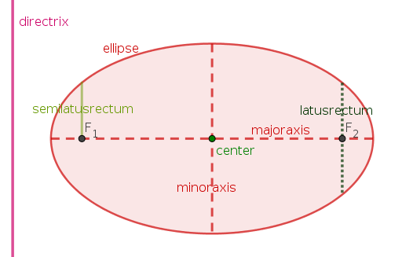
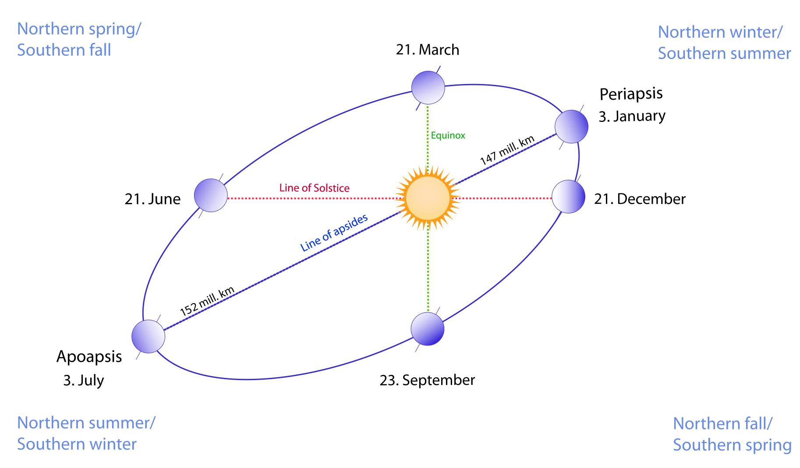
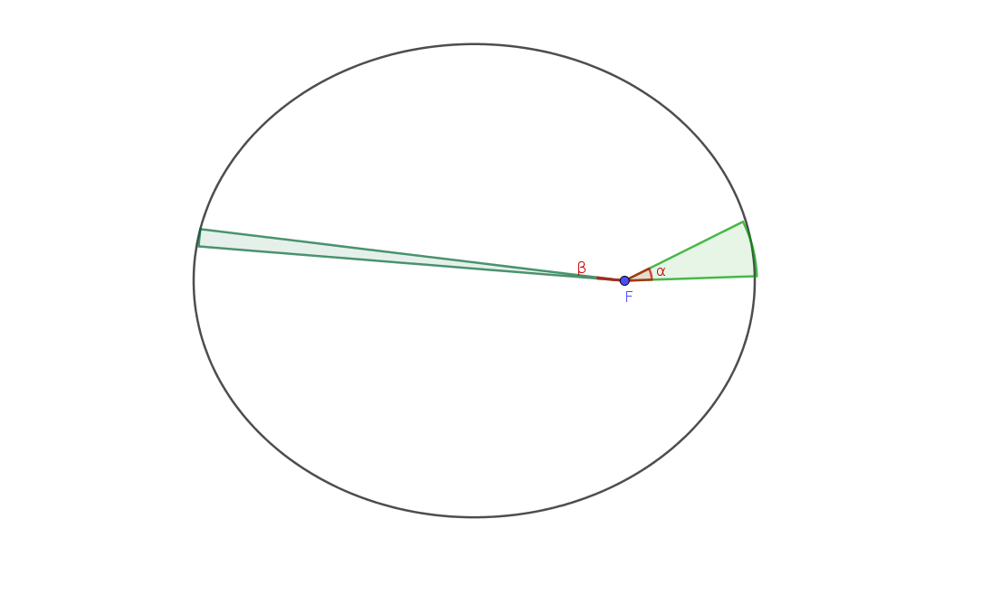

Section 3.2 Ellipse in Astronomy
Based on Tycho Brahe’s excellently accurate and comprehensive astronomical and planetary observations, Johannes Kepler formulated the three Kepler’s laws of planetary motion between 1609 and 1619:
1
en.wikipedia.org/wiki/Tycho_Brahe2
en.wikipedia.org/wiki/Johannes_Kepler3
en.wikipedia.org/wiki/Kepler%27s_laws_of_planetary_motion- The orbit of a planet is an ellipse with the Sun at one of the two foci.
- A line segment joining a planet and the Sun sweeps out equal areas during equal intervals of time.
- The square of the orbital period of a planet is proportional to the cube of the semi-major axis of its orbit.
The first two laws are contained in his book Astronomia Nova ("New Astronomy"), published in 1609, based on Tycho Brahe’s accurate observations of Mars, while the third law is contained in his book Harmonices Mundi ("The Harmony of the World"), published in 1619. Sir Isaac Newton obtained a theoretical explanation of Kepler’s laws of motion of the planets based on his three laws of motion — the basis of classical mechanics — in his work Philosophiæ Naturalis Principia Mathematica ("Mathematical Principles of Natural Philosophy"), published in 1687.
4
5
Mars coincidentally has the second highest eccentricity (\(e=0.0934\)) of all planets after Mercury (\(e=0.2056\)).
6
en.wikipedia.org/wiki/Harmonices_Mundi7
en.wikipedia.org/wiki/Isaac_Newton8
en.wikipedia.org/wiki/Philosophi%C3%A6_Naturalis_Principia_MathematicaThe first law is a statement about the shape of the orbit, an ellipse, and that the sun is contained at one of the two foci, while the second law is a statement about the speed with which the planet moves around on the orbit. They improve the previous model by Nicolaus Copernicus where a planetry orbits is a circle with the Sun at the center on which the planet moves with constant speed. The third law compares different planets to each other since it captures the relationship between the distance of planets from the Sun, and their orbital periods. We will look at the first and second law here.
9
Copernicus’ model is published in his book De revolutionibus orbium coelestium ("On the Revolutions of the Celestial Spheres") in 1543.
10
en.wikipedia.org/wiki/Nicolaus_CopernicusThe first law places the Sun at one of the foci of an ellipse which is the orbit of the planet. Mathematically, it is therefore useful to place one of the foci of the ellipse at the origin of the coordinate system, and, in fact, use polar coordinates to represent an ellipse. The formula of an ellipse in polar coordinates \((r,\theta)\) (i.e., with radial coordinate \(r\) and angular coordinate \(\theta\))
\begin{equation*}
r = \frac{\ell}{1+e\,\cos(\theta)}
\end{equation*}
where \(e\) is the eccentricity and \(\ell\) is the semi-lactus rectum of the ellipse (we explain the latter shortly). For the orbit of the Earth, one has \(e=0.0167086\text{,}\) a value close to zero and thus Earth’s orbit is almost a circle, and \(\ell = 149\,555\,000\)km. Using SageMath and polar_plot we can plot an accurate picture of the shape of Earth’s orbit (the units on the axes are million km): The latus rectum is the chord parallel to the directrix (and thus prependicular to the major axis) and passing through one of the two foci; half of its length is called semi-lactus rectum which is therefore the distance from the foci to the point on the ellipse.
11
A chord is a line segment joining two points on any curve, e.g., on the ellipse.

We note that from the eccentricity \(e\) and the semi-lactus rectum \(\ell\) one can calculate all the other parameters of the ellipse: The semi-major axis is given by \(a=\frac{\ell}{1-e^2}\text{,}\) the semi-minor axis is given by \(b=\frac{\ell}{\sqrt{1-e^2}}\text{,}\) the linear eccentricity is given by \(c=e\cdot\frac{\ell}{1-e^2}\) etc. (in fact, given any two quantities, one can calculate the others).
Two points on a planetary orbit are of particular interest: The perihelion is the point on the orbit that is closest to the Sun, while the aphelion is the point that is farthest from the Sun. In polar coordinates they are located at \(\theta=0^{\circ}\) and \(\theta=180^{\circ}\text{,}\) respectively. One can therefore easily calculate the distances:
- the distance Sun to perhelion is \(\frac{\ell}{1+e}\text{,}\) and
- the distance Sun to aphelion is \(\frac{\ell}{1-e}\text{.}\)
Perihelion and aphelion are sometimes incorrectly used for the orbits of objects about bodies other than the Sun. The general terms for orbits around any center of mass (not just the Sun) are periapsis and apoapsis, respectively.
Some people wrongly believe that the seasons are due to this varying distance of the Earth to the Sun — this is not the case. The seasons are due to the Earth’s axial tilt of \(23.43696^{\circ}\text{,}\) which is the angle between the plane that contains the orbit of the Earth around the Sun and the plane through the equator of the Earth. By the conversation of angular momentum this tilt (essentially) stays the same as the Earth wanders around the Sun, thus the solstices (the shortest and longest day of the year around June 21st and December 21st) and the equinoxes (the days where night time and daylight have equal length all over Earth around March 21st and September 23rd) occur on specific points on Earth’s orbit. the following picture shows the relationship between the perhelion (periapsis), the aphelion (apoapsis) and the seasonal dates (this picture is taken from here).
12
Earth’s tilt is also the reason for the tropics being between \(23.43696^{\circ}\)S and \(23.43696^{\circ}\)N, and the polar circles at \(66.56304^{\circ}\)S and \(66.56304^{\circ}\)N, respectively.
13
upload.wikimedia.org/wikipedia/commons/f/f0/Seasons1.svg
As you can in this picture the perihelion (periapsis) falls on January 3rd, and thus almost on the winter solstice (December 21st). If the two events would coincide, then the two equinoxes would be given by the points on the ellipse connected by the latus rectum; in other words, in that case the equinoxes would be given by the points where the ellipse crosses the \(y\)-axis in the first SageMath picture we plotted above. To make some of the calculations easier below, we will pretend that the two solstices coincide with the perihelion and the aphelion, respectively.
Let us now look at Kepler’s second law, the statement about the speed of a planet around the Sun. It states that the "area speed" is constant. In equal times, the segment connecting the focus with the planet will sweep out equal areas — and thus close to the perihelion the planet will move faster than close to the aphelion (i.e., the closer the planet is to the Sun, the faster it moves).

Can we calculate these areas? Luckily yes, and for this the above polar form of the ellipse is helpful again. Recall that areas can be calculated using integrals, so what integral do we have to calculate here? If you look at a very small angle \(\varDelta\theta\text{,}\) the area the corresponding segment sweeps out is approximately a circular sector of radius \(r\) and thus has area
\begin{equation*}
\frac12\,r^2\,\varDelta\theta = \frac12\,\left(\frac{\ell}{1+e\cos(\theta)}\right)\cdot \varDelta\theta
\end{equation*}
Changing this now to an integral, the area swept out by travelling from polar angle \(\theta_1\) to polar angle \(\theta_2\) (measured with the focus at the origin) is
\begin{equation*}
\frac12\int\limits_{\theta_1}^{\theta_2} \left(\frac{\ell}{1+e\,\cos(\theta)}\right)^2\,\operatorname{d}\!\theta .
\end{equation*}
SageMath can find the anti-derivative of \(\frac12\int \left(\frac{\ell}{1+e\,\cos(\theta)}\right)^2\,\operatorname{d}\!\theta\text{:}\) However, we will use the command numerical_integral to explore Kepler’s second law further. If you use numerical_integral to evaluate integrals numerically, SageMath will return two numbers: The calculated numerical value of the integral, and the possible error made by calculating the integral not exact but by some numerical method. We will only be interested in the first number here.
It takes the Earth \(365.256363004\) days to orbit once around the Sun (i.e., approximately, \(365\frac14\) days, and therefore we have a leap year every \(4\) years). Thus, on average, we expect that it takes the Earth slightly more than a day (namely, \(\frac{365.256\ldots}{360}\approx 1.0146\ldots = 1\ \text{day}\ 21\) minutes) to sweep out an elliptical sector of center angle \(1^{\circ}\text{.}\) However, near the perihelion the Earth will move faster than average, so it sweeps out such an angle of \(1^{\circ}\) in less time, while near the aphelion the Earth will move slower and thus it will need more time to sweep out this angle.
We first calculate the total area of an ellipse with the same eccentricity than Earth’s orbit (the semi-lactus rectum enters as a quadratic factor \(\ell^2\text{,}\) thus we can simply set it equal to one for the moment). Since it is almost a circle, we almost get the value of \(\pi\) here; the possible error is around \(3\cdot 10^{-14}\) and thus we can certainly trust this numerical calculation. The exact result is
\begin{equation*}
\pi\cdot a\cdot b = \frac{\pi\cdot \ell^2}{(\sqrt{1-e^2})^3} = \frac{\pi\cdot\ell^2}{(\sqrt{1-0.016710219^2})^3}
\end{equation*}
giving the same value.
We now calculate how long it takes the Earth to travel \(1^{\circ}\) on its orbit, and then plot the result: As you can see, near the perihelion it takes the Earth less than a day to sweep out an elliptical sector with central angle of \(1^{\circ}\) (close to \(0.98\ \text{days}\) which is \(29\) minutes short of a full day), while near the aphelion (in summer) we need around \(1.05\ \text{days}\ = 1\ \text{day}\ 1\ \text{hour}\ 12\) minutes for the same angle.
Let us look at another consequence of Earth’s elliptical orbit: If Earth’s orbit would be a perfect circle, the two equinoxes would be exactly half a year apart. In our approximation, the spring equinox happens at polar angle \(90^{\circ}\text{,}\) while the autumn equinox happens at polar angle \(270^{\circ}\text{.}\) So, the combined time for spring and summer is proportional to
\begin{equation*}
\frac12\int\limits_{90^{\circ}}^{270^{\circ}} \left(\frac{\ell}{1+e\,\cos(\theta)}\right)^2\,\operatorname{d}\!\theta,
\end{equation*}
while the combined time for autumn and winter is propoportional to
\begin{equation*}
\frac12\int\limits_{0^{\circ}}^{90^{\circ}} \left(\frac{\ell}{1+e\,\cos(\theta)}\right)^2\,\operatorname{d}\!\theta + \frac12\int\limits_{270^{\circ}}^{360^{\circ}} \left(\frac{\ell}{1+e\,\cos(\theta)}\right)^2\,\operatorname{d}\!\theta.
\end{equation*}
By this consideration, we find that spring and summer combined last a total of i.e., approximately \(186\frac12\) days. Correspondingly, autumn and winter last then a total of \(178\frac34\) days, or approximately \(7\frac34\) days less than spring and summer combined. Since the perihelion and the aphelion don’t fall on the solstices, we actually got one day too much here, but we can acount for the \(6\frac34\) days as follows: Since there are more months with \(31\) days during the spring-summer months and winter also contains the short February, there are \(2\frac34\) less days between September 21st and March 21st than the other way round; and since the equinox falls on September 23rd (and not September 21st), we gain another \(4\) days for the difference between the spring-summer part vs. the autumn-winter part of the year. So the small eccentricity of the Earth’s orbit already makes a difference of around a week when we maesure the time between subsequent equinoxes!
Kepler’s laws of planetary motion also apply to other celestial bodies that wander around the sun, e.g., asteroids and comets. For example, Halley’s Comet is a famous comet which orbits the Sun in \(75.315\) years (its last perihelion was in 1986, the next one should be in mid-2061 — track it here and you get a page with lots of information; if you do nothing else, at least scroll down to the "Orbit Visualization": Halley’s Comet has recently passed its aphelion and is now slowly but increasingly speeding up towards the Sun again.) and was observed from the Earth since ancient times. The eccentricity of its orbit is \(0.967\text{.}\) Note that Kepler’s third law allows us to immediately calculate the semi-major axis of Halley’s comet from the knowledge of Earth’s semi-major axis: Its length is \(\sqrt[3]{75.315^2} \approx 17.8\) times the length of Earth’s semi-major axis.
14
en.wikipedia.org/wiki/Halley%27s_Comet15
theskylive.com/halley-infoIf this section made you interested in astronomy, visit the Harry Bailey Observatory of the Barbados Astronomical Society on a Friday night.
16
hbo.bb/hbo/